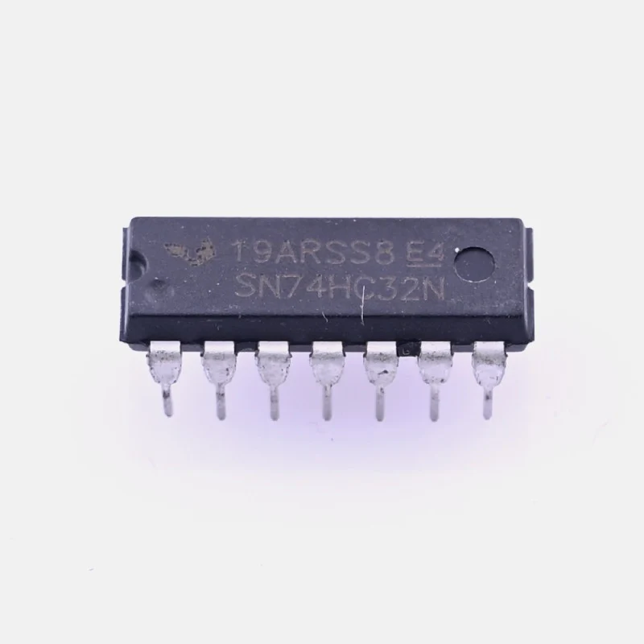

The OR Gate is a digital logic gate that implements logical disjunction. It behaves such that the output is HIGH (1) if at least one of its inputs is HIGH.
Real-World Applications: Used in alarm systems (Window Sensor OR Door Sensor triggers alarm), industrial decision circuits (Button A OR Button B starts conveyor), and microcontroller interrupt handling.
Note: The "+" symbol represents Logical Addition, not arithmetic addition.

TTL Quad 2-Input OR Gate
The 7432 is a standard logic IC containing four independent OR gates. It operates on 5V TTL logic levels, commonly used in legacy and hobbyist electronics.
Both inputs are OFF. The OR gate requires at least one input to be HIGH.
| A | B | Q |
|---|---|---|
| 0 | 0 | 0 |
| 0 | 1 | 1 |
| 1 | 0 | 1 |
| 1 | 1 | 1 |
In Boolean algebra, OR represents addition, but with different rules than arithmetic:
0 + 0 = 0
0 + 1 = 1
1 + 1 = 1 (Max value is 1)
The output is true if any input is true.
Example: A=0, B=1 → Q=1
Example: A=0, B=0 → Q=0
Like all physical gates, the OR gate takes time to react. For the 7432 IC, the propagation delay is typically around 10-22 nanoseconds.
TTL: 7432 (Standard Transistor-Transistor Logic).
CMOS: 74HC32 (High-speed CMOS). Lower power consumption and higher noise immunity than TTL.